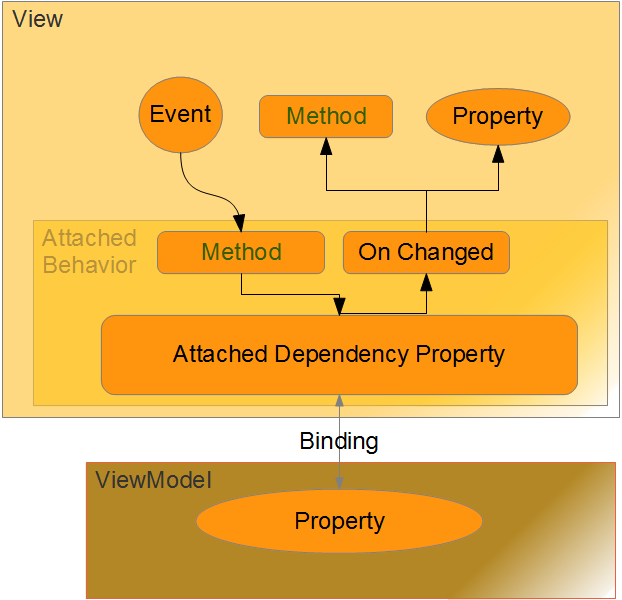

Summary
This article is a small survey on a re-occurring pattern of attached behaviours.
I hope that defining the ASR and AR pattern based on a number of sample implementations
gives us a way for better understanding these thinks. The pattern itself is far
from being a rocket science breakthrough. It is just a review on a re-occurring
theme. But naming things and pointing out their common structure should enable us
to better understand them.
The discussion on patterns might even be boring to you. In that case, check out the collection of attached behaviours and samples attached to this article. Maybe there is something more interesting for you, as well.
Introduction
I have been given the task of implementing a Drag & Drop function that is present in almost
every application these days. The required workflow is this:
- The user drags file(s) from the Windows Explorer and drops them on Application X
- Expectation: Application X opens the dropped files and displays their content
I was interested in doing this with WPF and MVVM - so I had a hunch that
it could be done with attached behaviours. Therefore, I first researched the
event based solution and converted it later on into an attached behaviour.
I looked real hard at the attached behaviour and was not happy with it until
I could be sure that it supports command bindings with RoutedCommands or
delegate (RelayCommand) Commands as a sink of the drop event.
The solution to each of these steps is based on three other solution [1][2][3]
(by their respective authors) that I found on the Internet. It was Kane Nguyen
at the WPF MSDN Forum [3] who helped me getting the final version of the attached
drop behaviour.
Thinking about these developments has made me think about a development pattern
Attach-Subscribe-Response (ASR) that seems to be consistently re-appearing with
attached behaviours. I am not claiming that this is the only pattern with attached
behaviours nor am I claiming that I have invented something. I am just trying to separated a pattern from some samples. Just naming it and understanding the abstract
meaning should enable us to decide early on whether something can be implemented with
an attached behaviour or not.
I am talking about this pattern and other thinks I learned from it further below.
The next sub-sections gives you a feeling of how I developed the DropCommand behaviour.
This together with the ASR pattern should be helpful when you look at developing your
own attached behaviour for control X, event Y, and (command) binding Z.
The Event based method for file Drag & Drop operations
Sample Code: 01_EventBasedDragDrop.zip
Some research [1] showed that dragging a file over an applications window is a rather
trivial problem to implement (one you found the solution on the net - haha). In WPF
there really is not much more than setting the AllowDrop="True" property
and defining a corresponding routed event handler Drop="DropEventHandler"
on the UI where you want the file drop to be accepted. The event handler itself is also
not too complicated:
private void DropEventHandler(object sender, DragEventArgs e)
{
if (e.Data.GetDataPresent(DataFormats.FileDrop))
{
string[] droppedFilePaths =
e.Data.GetData(DataFormats.FileDrop, true) as string[];
foreach (string droppedFilePath in droppedFilePaths)
{
MessageBox.Show(string.Format("Opening file '{0}'",
droppedFilePath), "Debug Info", MessageBoxButton.OK);
}
}
}
Download and test the sample attached to the beginning of this section if you want
to see this in action.
Drop Attached Behaviour with Delegate Commands
Sample Code: 02_ABDelegate.zip
In this section I am using an attached drop behaviour to show you how you can receive a
drop event and convert it into a delegate command. Refer to the next section if you
are interested in RoutedCommands.
The Sample application for this section starts up in the Application_Startup
method of the App.xaml.cs file. Here we construct the ViewModel with the
MainWindow and show the window to the user.
The MainWindow is identical to the MainWindow in the previous version - except that
we do no longer use the event in the code behind file. Instead we do use an attached
behaviour behav:DropFileCommand.DropCommand="{Binding LoadFileCommand}"
which invokes the LoadFileCommand upon receiving a drop event from the
attached control.
And this is where I used to exit the analysis, because I did not understand how the
drop event can possibly cause a command to fire, or do something else, such as, bring
an item into view, for that matter. But bare with me and keep the sample from the previous
section in mind.
The equivalent attached behaviour for the event processing of the previous section
can be derived if we can agree that we really want to convert [2] the initial event into a command and use the command binding to do the actual processing in the ViewModel.
Drop Event -> Execute Command -> Processing in ViewModel
Attach
Looking into the DropFileCommand.cs file we find that the attachment is
realized with one static ICommand field and a corresponding setter and getter method:
private static readonly DependencyProperty DropCommandProperty = DependencyProperty.RegisterAttached(
"DropCommand",
typeof(ICommand),
typeof(DropFileCommand),
new PropertyMetadata(null, OnDropCommandChange));
public static void SetDropCommand(DependencyObject source, ICommand value)
{
source.SetValue(DropCommandProperty, value);
}
public static ICommand GetDropCommand(DependencyObject source)
{
return (ICommand)source.GetValue(DropCommandProperty);
}
This is called an attached dependency property [6] and you can generate it in Visual Studio 2010 by typing 'propa' and hitting the TAB-Key (if the drop down was not offered already). This is the basic glue that keeps things together just like the dependency property glues the ViewModel to the View.
Subscribe
Now, at binding time the DropCommandProperty is bound to the ViewModel, which
in turn invokes the OnDropCommandChange method:
private static void OnDropCommandChange(DependencyObject d, DependencyPropertyChangedEventArgs
{
UIElement uiElement = d as UIElement uiElement.Drop -= UIElement_Drop;
var command = e.NewValue as ICommand;
if (command != null)
uiElement.Drop += UIElement_Drop;
}
The OnDropCommandChange method sees the UI element to which the behaviour is attached in the parameter DependencyObject d. We use this behaviour to register
the UIElement_Drop method with the drop event of the UI element we are attached to.
This code
uiElement.Drop += UIElement_Drop;
is basically telling the computer to call the UIElement_Drop method each time when a drop event occurs.
Response
Looking into the UIElement_Drop method we can see
UIElement uiElement = sender as UIElement;
if (uiElement == null)
return;
ICommand dropCommand = DropFileCommand.GetDropCommand(uiElement);
if (dropCommand == null)
return;
if (e.Data.GetDataPresent(DataFormats.FileDrop))
{
string[] droppedFilePaths =
e.Data.GetData(DataFormats.FileDrop, true) as string[];
foreach (string droppedFilePath in droppedFilePaths)
{
if (dropCommand is RoutedCommand)
(dropCommand as RoutedCommand).Execute(droppedFilePath, uiElement);
else
dropCommand.Execute(droppedFilePath);
}
that the caller can be extracted out of the sender parameter. That information is used to retrieve the exact command binding of the instance that generated this event (after all, these are all static methods). The inner if block looks familiar to the processing in the previous section - the deciding difference here is that we either call a RoutedCommand or, as in our present case, a delegete
(RelayCommand) Command.
The command binding is defined in the XAML and it invokes the LoadFile method.
Drop Attached Behaviour with Delegate Commands or RoutedCommands
Sample Code: 03_ABCommand.zip
The routed command binding in this sample is a little different in comparison to the previous sample.
There is no RelayCommand class, because the RoutedCommand class and the
RoutedUICommand class are part of the standard .Net Framework.
The InitMainWindowCommandBinding method in the App class is used to bind
the static AppCommand.LoadFile RoutedUICommand to the LoadFile
method in the ViewModel. This binding links the RoutedUICommand to a method that is executed
whenever the command is invoked.
The attached behaviour binds to the AppCommand.LoadFile RoutedUICommand with
the following binding expression in the MainWindow XAML:
behav:DropFileCommand.DropCommand="cmd:AppCommand.LoadFile"
Otherwise, the behaviour itself is identical with the behaviour of the previous section. The only difference
is that we invoke the (dropCommand as RoutedCommand).Execute(droppedFilePath, uiElement); branch
in the if statement of the UIElement_Drop method (thanks go to Kane Nguyen for
sharing this detail).
The Attached Behaviour Pattern
Looking back at the DropFileCommand.cs file (and the description I've
given above) we can see that the attached behaviour can be divided into three parts
(or 3 processing stages):
- Attach
- Subscribe
- Response
I have realized that these 3 parts are a re-occurring theme. Moreover, it is now
clear to me that we can develop this type of attached behaviour by first implementing
the event based method (Response). Then implementing the Attach portion and bringing
it together in the Subscribe portion.
Here is an overview that depicts the bits and pieces with attached behaviours:

My primary challenge here is to master all these items: events, properties, and methods available with UI controls, - with the correct response formula in WPF (although a response can also result in the manipulation of properties or methods, as we will see next.
ASR Samples
ScrollDownListView Behaviour
04_BringListViewItemIntoView.zip
Josh Smith has published an attached behaviour for bringing a selected TreeView
item into view when it is selected via ViewModel [7].
This implementation of an atached behaviour also shows the Attach-Subsribe-Response (ASR)
pattern. This time however, is the Response not an executed command but the execution of
a method of a TreeViewItem.
There are similar problems - for example scroll a listview down to its last entry at the end
of a long running process - and when you compare Josh's solution and the sample solution in
this section (BringSelectedListViewItemIntoView) you will find that Josh's solution
was used as a template (almost literaly exchanging TreeView with ListView
and TreeViewItem with ListViewItem).
The processing sampled here is explained in more detail in [8].
Looking into the BringSelectedListViewItemIntoView class shows that we again
have 3 portions of code. The Attach part is the IsBroughtIntoViewWhenSelected
attached property. The Subscribe part is the event hooking in the
OnIsBroughtIntoViewWhenSelectedChanged method. The Response part is the event processing in the OnListViewItemSelected method.
Strech ListView Column
04_BringListViewItemIntoView.zip
The 04_BringListViewItemIntoView.zip sample also contains an attached behaviour that will stretch
the columns of a ListView across the available the space (ListViewColumns.cs). This is
also an excellent sample of the ASR pattern discussed here. Note that the attached behaviour Subscribes
to two events: Loaded and SizeChanged. Either event is served with a
different Response.
This means the pattern can be extended such that we have a control, n event subscriptions,
and at least (if not more) n different responses.
Non-ASR Samples
Dialog Closer
The DialogCloser [9] attached behaviour shows that we are not limited to ASR.
This attached behaviour (AB) consists only of an attached dependency property with
a method that is executed when the attached dependency property is changed. I therefore,
name this pattern the AR (Attach - Respond) pattern.
Surprisingly, this attached behaviour does not subscribe to any event, but is still able to do
something useful by re-acting on a ViewModel initiated change of the attached dependency property.
This AB shows that we are not limited to events being realized in the view on which the property is attached.
We can also react to changes in the ViewModel (via OnChanged method of the attached dependency property).
The ASR pattern is usually used to transfer data or state from the View into the ViewModel
(although it can just as well work from ViewModel into View as well), while the pattern of the
DialogCloser gives an example for transferring state from a ViewModel into the View via attached
behaviour.
What I have learned
I have learned in this development that authors of ICommand dependency
or attached properties should always be sure to check for the kind of command that is actually bound and execute the corresponding
Execute method instead of implementing support for only one kind of ICommand class. The required effort boils down to something like this:
if (dropCommand is RoutedCommand)
{
(dropCommand as RoutedCommand).Execute(droppedFilePath, uiElement);
}
else
{
dropCommand.Execute(droppedFilePath);
}
...and is well worth it. The second thing that I've learned is the pattern on developing attached behaviours from event based codes. As a beginner, I am rather inclined to try this instead of using more complex libraries [5] that I do not, yet, fully understand. Do not get me wrong - I am using open source libraries on a daily base. But I also develop my own solutions when I can. With attached behaviours this seems to be my way to go since I end up with simple non-generic solutions that are easy to maintain and apply.
Reading about the differences between Routed Events and Commands etc. [4] has given me a good base for arguing for or against RoutedCommands in a particular implementation.
References
History
- 17.07.2012 - Initial post
- 21.07.2012 - Added an overview graphic and removed some spelling errors